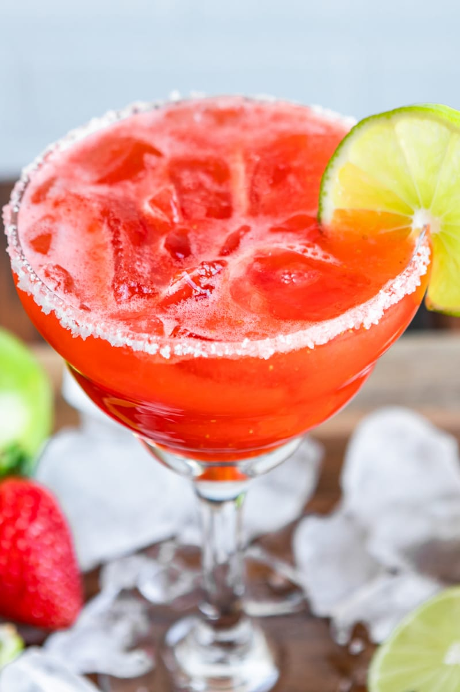

Strawberry Margarita

Description
This is a nice receipe for a refeshening evening. You only need 5 ingredients and a blender. Enjoy on the rocks or frozen! It's delicious either way!
Ingredients
- Margarita Salt
- Fresh Strawberries
- Tequila
- Honey or Simple Syrup
- Triple Sec
Steps
- In a shallow dish as wide as your serving glass, add Margarita salt (or kosher salt) to 1/4-inch deep. Run a lime wedge around the top of each glass, then dip the top of the glass upside-down into the salt and turn to coat.
- To a blender, add strawberries, tequila, lime juice, honey and triple sec. Pulse until completely smooth.
- Let mixture rest for about 3 minutes, and skim off foam. Add more tequila or sweetener to taste.
- Fill each rimmed glass about half full with ice. Add margarita mixture, garnish with a lime wedge, and serve immediately.
Variations
- Frozen margarita: add ice to the blender to taste blend until slushy like, 5 cups of ice
- Daiquiri: To make strawberry daiquriri, subsitute rum for the tequila